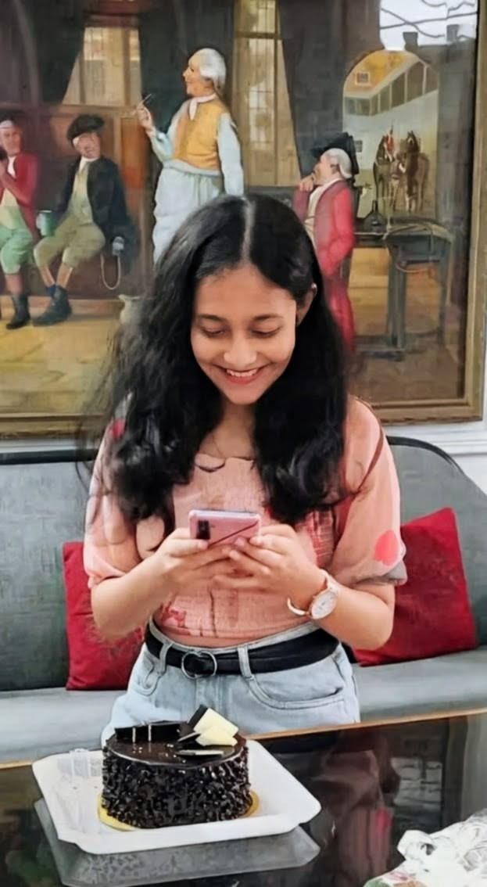
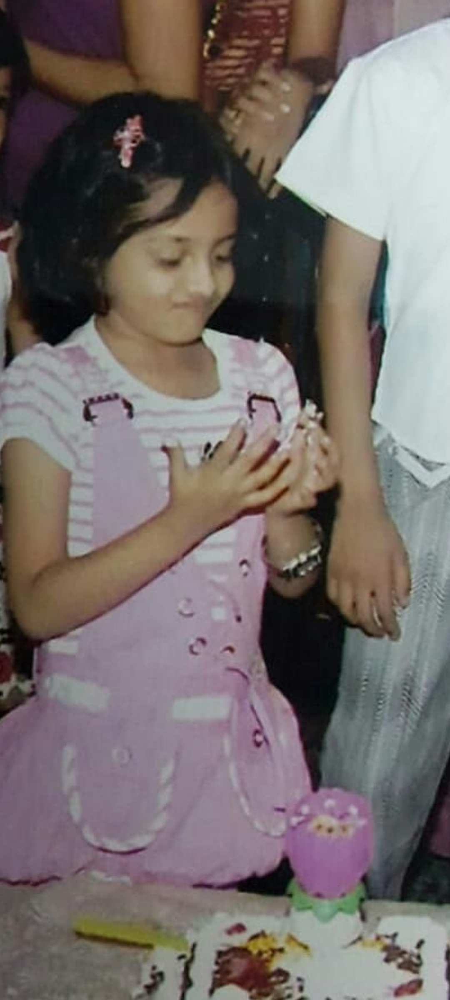

Here is a little surprise for you...
Would you like to open it? 🎁
I know abhi tumhare days are revolving around books, syllabus and little little stress...
Lekin aaj ke liye saari tension se bahar aao.
Duniya mein kaafi khoobsurat cheezein hain... jaise yeh smile. ☺️

I have two wishes for you...
One, that you always keep this beautiful smile. ✨

And the second... no matter how old you grow...
chocolates aur desserts dekhte hi, tumhare andar ka yeh cute sa 'inner monster' humesha aise hi bahar aaye! 👻🎂
They say sunflowers spend their whole lives chasing the light...
But looking at you in this frame...
I think the light just found its favorite place to rest. 🌻✨
By the way...
I don't forget important dates.
I know you’re busy chasing something big right now...
but I just wanted to make sure your day doesn’t go unnoticed.
Meet soon?